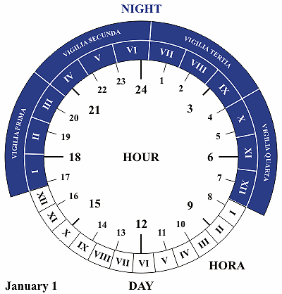

Nycthémère
Heure, minute
- -1350, Egypte : Clepsydre, 12h par jour et par nuit
- -500 : Heure temporaire
 - 1300 : Heure equinoxiale

Indiana
Régions observant l'heure d'été
Régions ayant un certain temps observé l'heure d'été
Régions n'ayant jamais observé l'heure d'été
UTC+7 - Java
import java.util.Calendar;
import java.util.Date;
// Date init
Calendar cal = Calendar.getInstance();
cal.set(2020, 11, 1);
Date maybeFirstNovember = cal.getTime();
// maybeFirstNovember: Tue Dec 01 21:31:53 CET 2020
// Date manipulation
cal.setTime(maybeFirstNovember);
cal.add(Calendar.DATE, 24);
Date xmas = cal.getTime();
// xmas: Fri Dec 25 21:31:53 CET 2020
// Mutable
maybeFirstNovember.setDate(25);
// maybeFirstNovember: Fri Dec 25 21:31:53 CET 2020
import java.text.ParseException;
import java.text.SimpleDateFormat;
public class DateCalendarUtils {
private static SimpleDateFormat sdf =
new SimpleDateFormat("yyyy-MM-dd");
public String parse(String string) {
try {
return sdf.parse(string).toString();
} catch (ParseException e) {
e.printStackTrace();
return "error";
}
}
}
Comment fixer une Date dans ses tests
import java.time.Clock;
import java.time.LocalDateTime;
public class Java8Time {
private Clock clock;
public Java8Time(Clock clock) {
this.clock = clock;
}
public LocalDateTime now() {
return LocalDateTime.now(clock);
}
}
import java.time.Clock;
import java.time.Instant;
import java.time.ZoneId;
private Java8Time sut;
@BeforeEach
void setUp() {
// Fix the time !
Clock clock =Clock.fixed(
Instant.parse("2020-03-02T14:30:00Z"),
ZoneId.of("Europe/Paris")
);
sut = new Java8Time(clock);
}
Moment mutable
import * as mt from 'moment';
const m1 = mt();
// Bad
const m2 = m1.subtract(3, 'months');
// Good
const m2 = mt(m1).subtract(3, 'months');
Sources
- Falsehoods programmers believe about time - Noah Sussman http://FalsehoodsAboutTime.com
- UTC is enough for everyone, right ? - Zach Holman https://zachholman.com/talk/utc-is-enough-for-everyone-right
- https://www.timeanddate.com/
- Wikipedia
- JavaDoc